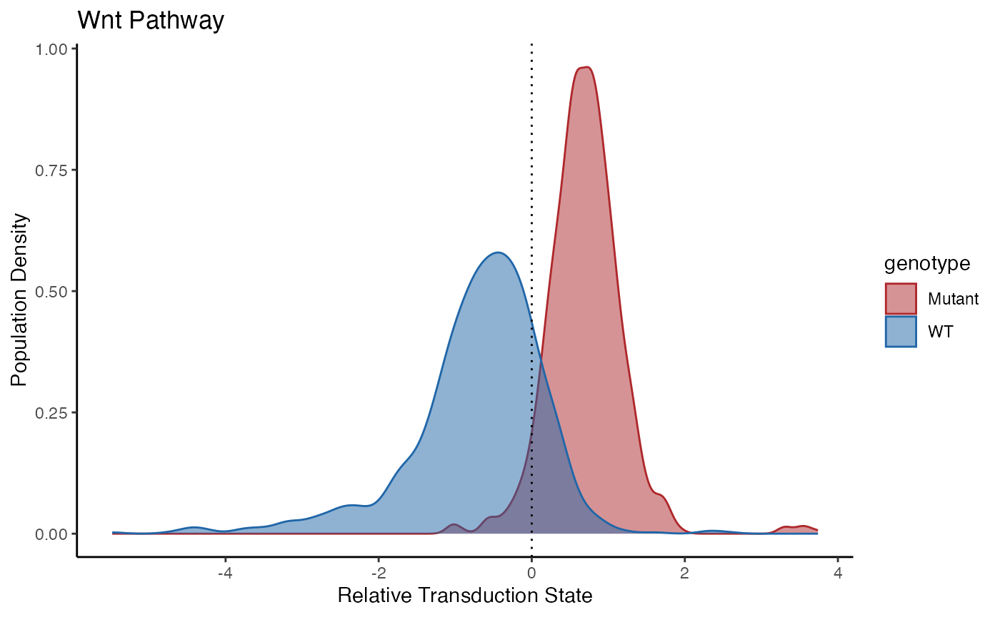

examples.RmdThis vignette demonstrates how to use the PathwayEmbed package to compute and visualize pathway activation using single-cell transcriptomic data. We use the example dataset fake_test_object included with the package.
# Calculate pathway activation using MDS
# Default batch.size is set to 1000
mds_results <- ComputeCellData(
fake_test_object,
pathway = "Wnt",
distance.method = "manhattan"
)
#> Centering and scaling data matrix
#> Warning: The `slot` argument of `GetAssayData()` is deprecated as of SeuratObject 5.0.0.
#> ℹ Please use the `layer` argument instead.
#> ℹ The deprecated feature was likely used in the PathwayEmbed package.
#> Please report the issue to the authors.
#> This warning is displayed once every 8 hours.
#> Call `lifecycle::last_lifecycle_warnings()` to see where this warning was
#> generated.
#> Centering and scaling data matrix
#> Parameter 'batch.size' is missing or NULL. Setting default batch size to 1000.
#> Processing batch 1
#> Computing distance...
#> Running MDS ...
#> MDS finished
#> Batch 1 processed with 1000 cells
#> Processing batch 2
#> Computing distance...
#> Running MDS ...
#> MDS finished
#> Batch 2 processed with 1000 cells
# Format MDS results and metadata for plotting
plot_data <- PreparePlotData(
fake_test_object,
mds_results,
group = "genotype"
)
# Visualize 2D MDS embedding colored by genotype
PlotPathway(
to.plot = plot_data,
pathway = "Wnt",
group = "genotype",
color = c("#ae282c", "#2066a8")
)
# Calculate % of cells per group with high pathway activation
CalculatePercentage(
to.plot = plot_data,
group_var = "genotype"
)
#> # A tibble: 2 × 4
#> group percentage_on percentage_off cohens_d
#> <chr> <dbl> <dbl> <dbl>
#> 1 Mutant 94.9 5.1 1.97
#> 2 WT 17.7 82.3 1.97